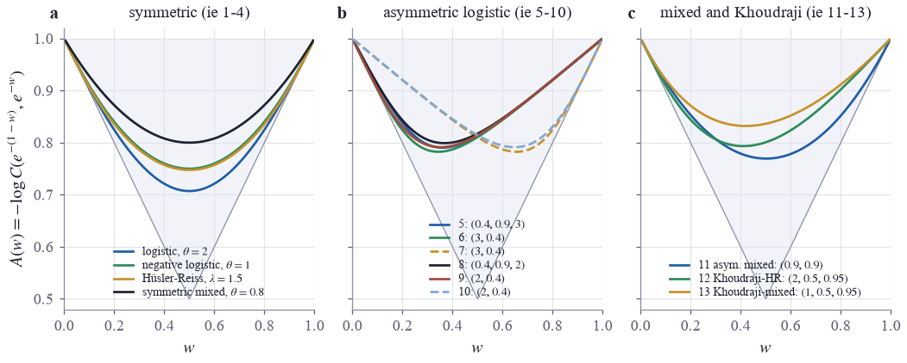
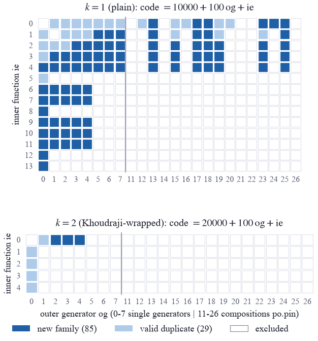
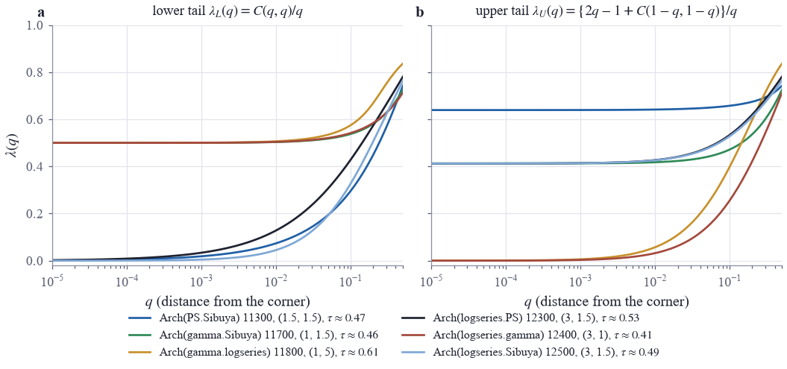

The generic engine¶
Besides the 26 hand-coded families, fortvine contains a generic pair-copula engine
(src/families_gen.inc) that builds Archimedean, extreme-value and Archimax copulas, their
compositions and their Khoudraji asymmetrisations from a small set of parts. One
implementation evaluates all of them, in log space and with exact parameter derivatives. The
engine has 114 valid codes: 85 new families (codes \(\ge 10000\)) and 29 that reproduce a
hand-coded family or another generic code.
The family pages (Archimedean, extreme-value, Archimax, Khoudraji) describe the copulas; this page describes the code scheme, the parameters, the exclusions and how to extend the engine. The complete list is in the catalogue.
One formula¶
Every generic family is of the form (Capéraà, Fougères & Genest 2000; Joe 2014, sections 3.5 and 3.18)
with two ingredients:
- the outer generator \(\Psi\): either none (\(\Psi(s) = e^{-s}\)), a Laplace transform of a positive random variable with one or two parameters, or a composition \(\Psi(s) = \psi_{\text{po}}\big(-\log\zeta_{\text{pin}}(s)\big)\) of two one-parameter Laplace transforms (Joe 2014, appendix A.1.2);
- the inner function \(\ell\) on the log scale: either \(\ell(s, t) = s + t\), which makes \(C\) Archimedean, or \(\ell(s, t) = (s + t)\, A\!\left(\frac{t}{s+t}\right)\) with a Pickands dependence function \(A\), which makes \(C\) Archimax (and extreme-value when \(\Psi = e^{-s}\)).
With \(S = \Phi(u)\), \(T = \Phi(v)\) and \(L = \ell(S, T)\) the h-functions and density are
Since \(\Psi' < 0 \le \Psi''\), \(\ell_s, \ell_t \ge 0\) and \(\ell_{st} \le 0\), both terms of the numerator are non-negative, so the density is a log-sum-exp of two finite logarithms and never suffers from cancellation.
The Khoudraji wrapper¶
Any member can be made asymmetric with Khoudraji's (1995) device
whose density, with \(x = u^a\), \(y = v^b\), is \(u^{-a}v^{-b}\,C(x,y)\,\big[(1-a)(1-b) + (1-a)\,b\,y\,\tfrac{h_2}{C} + (1-b)\,a\,x\,\tfrac{h_1}{C} + ab\,xy\,\tfrac{c}{C}\big]\), again a sum of non-negative terms.
The code scheme¶
| part | values | meaning |
|---|---|---|
| \(k\) | 1, 2 | 1 plain, 2 Khoudraji-wrapped (two extra parameters \(a, b\)) |
| og | 0 to 7, 11 to 26 | outer generator \(\Psi\) |
| ie | 0 to 13 | inner function: 0 Archimedean, 1 to 13 a Pickands function |
gen_is(fam) is true for every code \(\ge 10000\). The parts are extracted as
og = mod(fam, 10000) / 100 and ie = mod(fam, 100).
Outer generators (og)¶
| og | name | \(\Psi(s)\) | parameters | box |
|---|---|---|---|---|
| 0 | none | \(e^{-s}\) | none | |
| 1 | positive stable (PS) | \(\exp(-s^{1/\theta})\) | \(\theta\) | \([1, 20]\) |
| 2 | gamma | \((1+s)^{-1/\theta}\) | \(\theta\) | \([10^{-3}, 20]\) |
| 3 | Sibuya | \(1 - (1-e^{-s})^{1/\theta}\) | \(\theta\) | \([1, 20]\) |
| 4 | logarithmic series | \(-\theta^{-1}\log\big(1 - (1-e^{-\theta})e^{-s}\big)\) | \(\theta\) | \([10^{-3}, 35]\) |
| 5 | exponentially tilted PS | \(\exp\big(\delta^{-1} - (\delta^{-\theta} + s)^{1/\theta}\big)\) | \(\theta, \delta\) | \([1, 10] \times [0.01, 25]\) |
| 6 | generalised Sibuya | \(\delta^{-1}\big[1 - (1 - \eta e^{-s})^{1/\theta}\big]\), \(\eta = 1-(1-\delta)^\theta\) | \(\theta, \delta\) | \([1, 8] \times [10^{-3}, 1]\) |
| 7 | negative binomial | \(\big[(1-\pi)/(e^{s} - \pi)\big]^{1/\theta}\) | \(\theta, \pi\) | \([0.01, 30] \times [0, 0.99]\) |
| 11 to 26 | composition po.pin | \(\psi_{\text{po}}\big(-\log\zeta_{\text{pin}}(s)\big)\) | \(\theta_{\text{po}}, \theta_{\text{pin}}\) | see below |
With og = 0 to 7 alone (\(\ell = s + t\)) these are Gumbel, Clayton, Joe, Frank, BB9, BB8 and BB10, all available as hand-coded families; their value is as building blocks for Archimax copulas.
The compositions combine po, pin \(\in\) {1 PS, 2 gamma, 3 Sibuya, 4 log series} as og \(= 10 + 4(\text{po} - 1) + \text{pin}\). Inside a composition the boxes are PS \([1, 10]\), gamma \([10^{-3}, 15]\), Sibuya \([1, 10]\), log series \([10^{-3}, 30]\); the outer parameter comes first.
| og | composition | status |
|---|---|---|
| 11 | PS.PS | excluded (reduces to PS) |
| 12 | PS.gamma | = BB3 as Archimedean |
| 13 | PS.Sibuya | new |
| 14 | PS.logseries | excluded (inaccurate in double precision) |
| 15 | gamma.PS | = BB1 as Archimedean |
| 16 | gamma.gamma | = BB2 as Archimedean |
| 17 | gamma.Sibuya | new |
| 18 | gamma.logseries | new |
| 19 | Sibuya.PS | = BB6 as Archimedean |
| 20 | Sibuya.gamma | = BB7 as Archimedean |
| 21 | Sibuya.Sibuya | excluded (reduces to Sibuya) |
| 22 | Sibuya.logseries | excluded (inaccurate in double precision) |
| 23 | logseries.PS | new |
| 24 | logseries.gamma | new |
| 25 | logseries.Sibuya | new |
| 26 | logseries.logseries | excluded (inaccurate in double precision) |
Inner functions (ie)¶
\(w = t/(s+t)\) is the share of the second margin, the convention of fortvine's Tawn and Galambos families.
| ie | name | \(A(w)\) | parameters | box |
|---|---|---|---|---|
| 0 | none (Archimedean) | \(\ell = s + t\) | none | |
| 1 | logistic | \(\big[(1-w)^\theta + w^\theta\big]^{1/\theta}\) | \(\theta\) | \([1, 20]\) |
| 2 | negative logistic | \(1 - \big[(1-w)^{-\theta} + w^{-\theta}\big]^{-1/\theta}\) | \(\theta\) | \([0.01, 20]\) |
| 3 | Hüsler-Reiss | \(w\,\Phi_N(z_1) + (1-w)\,\Phi_N(z_2)\), \(z_{1,2} = \lambda^{-1} \pm \tfrac{\lambda}{2}\log\tfrac{w}{1-w}\) | \(\lambda\) | \([0.01, 20]\) |
| 4 | symmetric mixed | \(1 - \theta w(1-w)\) | \(\theta\) | \([0, 1]\) |
| 5 | asymmetric logistic | \((1-\psi_1)(1-w) + (1-\psi_2)w + \big[(\psi_1(1-w))^\theta + (\psi_2 w)^\theta\big]^{1/\theta}\) | \(\psi_1, \psi_2, \theta\) | \([0.01,1]^2 \times [1, 20]\) |
| 6 | asymmetric logistic, type 1 | ie 5 with \(\psi_2 = 1\) | \(\theta, \psi_1\) | \([1, 20] \times [0.01, 1]\) |
| 7 | asymmetric logistic, type 2 | ie 5 with \(\psi_1 = 1\) | \(\theta, \psi_2\) | \([1, 20] \times [0.01, 1]\) |
| 8 | asymmetric negative logistic | \(1 - \big[(\psi_1(1-w))^{-\theta} + (\psi_2 w)^{-\theta}\big]^{-1/\theta}\) | \(\psi_1, \psi_2, \theta\) | \([0.01,1]^2 \times [0.01, 20]\) |
| 9 | asym. negative logistic, type 1 | ie 8 with \(\psi_2 = 1\) | \(\theta, \psi_1\) | \([0.01, 20] \times [0.01, 1]\) |
| 10 | asym. negative logistic, type 2 | ie 8 with \(\psi_1 = 1\) | \(\theta, \psi_2\) | \([0.01, 20] \times [0.01, 1]\) |
| 11 | asymmetric mixed | \(1 - (\theta+\phi)w + \theta w^2 + \phi w^3\), \(\phi = -\tfrac\theta3 + \kappa\big(\tfrac{1-\theta}{2} + \tfrac\theta3\big)\) | \(\theta, \kappa\) | \([0, 1]^2\) |
| 12 | Khoudraji-Hüsler-Reiss | \((1-a)(1-w) + (1-b)w + v\,A_3(z)\), \(v = a(1-w) + bw\), \(z = bw/v\) | \(\lambda, a, b\) | \([0.01, 20] \times [0.01, 1]^2\) |
| 13 | Khoudraji-mixed | as ie 12 with \(A_4\) | \(\theta, a, b\) | \([0, 1] \times [0.01, 1]^2\) |
(\(\Phi_N\) is the standard normal distribution function.) The parametrisation \(\kappa \in [0, 1]\) of ie 11 maps the unit square onto the admissible region of Tawn's (1988) asymmetric mixed model, so the box constraints are enough to keep \(A\) a valid Pickands function. ie 12 and 13 are the Khoudraji asymmetrisations of ie 3 and 4 written as Pickands functions, so that they can be combined with an outer generator.

Examples of codes¶
| code | \(k\) | og | ie | name (fv_fam_name) |
|---|---|---|---|---|
| 10203 | 1 | 2 gamma | 3 HR | Archimax(gamma|HuslerReiss) |
| 11700 | 1 | 17 gamma.Sibuya | 0 | Arch(gamma.Sibuya) |
| 10013 | 1 | 0 | 13 | Khoudraji-mixed |
| 10006 | 1 | 0 | 6 | Tawn-type1 |
| 20200 | 2 | 2 gamma | 0 | Khoudraji-Clayton |
| 20300 | 2 | 3 Sibuya | 0 | Khoudraji-Joe |
Because of the three-parameter limit, the Khoudraji wrapper can only be applied to the one-parameter Archimedean generators and to the one-parameter Pickands functions; the new Khoudraji codes are 20200 (Clayton), 20300 (Joe) and 20400 (Frank), and the extreme-value ones are already covered by ie 5, 8, 12 and 13.
Parameters and bounds¶
Parameters are stored in par(1:3) in the order outer, inner, Khoudraji: first the 0 to 2
parameters of og, then the 0 to 3 of ie, then \(a, b\) if \(k = 2\). A code is valid only if the
total is between 1 and 3. gen_npar(fam) returns the count, fv_par_bounds(fam, lb, ub) the
box assembled from the tables above.
Valid codes and duplicates¶
gen_valid(fam) accepts a code only if it is well defined and identifiable. Excluded are:
- og outside 0-7 and 11-26, ie above 13, or a total of more than three parameters;
- og 0 with ie 0 (the independence copula) and og 1 with ie 1 (equal to the logistic extreme-value copula, Gumbel);
- the compositions PS.PS and Sibuya.Sibuya (they collapse to one family), and the three with a logarithmic-series inner part under PS, Sibuya or logarithmic series (og 14, 22, 26), which cannot be evaluated accurately in double precision;
- compositions with a gamma inner part (og 12, 16, 20, 24) combined with a Pickands function: they fail the engine's consistency tests;
- Khoudraji wrapping (\(k = 2\)) of inner functions 5 to 13, which are already asymmetric.
gen_dup(fam) marks valid codes whose copula is available elsewhere: the Archimedean codes of
og 0-7, 12, 15, 16, 19, 20 (Gumbel, Clayton, Joe, Frank, BB9, BB8, BB10, BB3, BB1, BB2, BB6,
BB7), the extreme-value codes 10001, 10002, 10003, 10005 (Gumbel, Galambos, Hüsler-Reiss,
Tawn), PS and gamma outer with the negative logistic inner (BB5, BB4), any one-parameter
generator with the logistic inner (equal to its composition with PS), the compositions with
a PS inner part (gamma.PS, Sibuya.PS, logseries.PS) with the logistic inner, Khoudraji-wrapped
extreme-value codes (they equal ie 5, 8, 12, 13) and Khoudraji-Gumbel (equal to Tawn).
Duplicates are kept because they are useful for testing: test/test_genfam.f90 checks that
they reproduce the hand-coded families.
codes = fv_generic_families() ! 85 codes, duplicates left out (default)
codes = fv_generic_families(new_only=.false.) ! all 114 valid codes

Names¶
fv_fam_name(fam) returns the literature name where one exists (Gumbel, BB4,
Tawn-type1, Galambos, ...) and otherwise a name built from the parts:
Arch(<generator>) for Archimedean codes, Archimax(<generator>|<inner>) for Archimax codes,
the inner name alone for extreme-value codes, with the prefix Khoudraji- for \(k = 2\).
Generator names are PS, gamma, Sibuya, logseries, tiltedPS, genSibuya, negbin
and po.pin for compositions. Invalid codes return invalid.
Tail dependence, symmetry and transposition¶
gen_lt(fam): lower-tail dependence, present when a gamma part (polynomially decaying Laplace transform) is the outer generator or either part of a composition.gen_ut(fam): upper-tail dependence, from a PS or Sibuya part or from any Pickands inner.gen_exch(fam): exchangeable, true for \(k = 1\) and ie \(\le 4\).gen_flip(fam, par): replaces the code and parameters by those of the transposed copula \(C(v, u)\); see Rotations and asymmetry.
The two tail flags drive the preselection of generic candidates.

Exactness¶
The engine is written once with abstract arithmetic and compiled four times: for real(dp)
(evaluation) and for the three dual-number types of fortvine_ad with 1, 2 and 3 derivative
slots (exact parameter scores). Every generator returns \(\log\Psi\), \(\log(-\Psi')\) and
\(\log\Psi''\); every inner function returns \(\ell\), \(\log\ell_s\), \(\log\ell_t\) and
\(\log(-\ell_{st})\). Each argument \(s\) travels together with \(\log s\), because \(\Phi(u)\) of a
gamma-inner composition overflows long before its logarithm does. Stable building blocks are
used throughout: \(\log(1 - e^{x})\) by Mächler's (2012) two-branch rule, \(\log\Phi_N(z)\) by an
asymptotic series below \(z = -30\), series expansions where a Sibuya or logarithmic-series
expression would cancel, and partial derivatives of \(A\) written per family so that
\(A - wA'\) is never formed by subtraction. See Numerics.
In fitting, generic families start from a grid ranked by Blomqvist's \(\beta\), use three Newton starts, and in vine selection are pre-screened on a subsample (only the four best per edge are fitted on all data), see Fitting.
Extending the engine¶
Adding a family part means adding cases to a few routines; everything else (density, h-functions, inverses by Newton, CDF, scores, fitting, rotations, selection) follows.
A new one- or two-parameter generator (for example as og = 8):
families_gen.inc, subroutineprim(k, th, de, s, ls, l0, l1, l2): addcase (8)returningl0\(= \log\Psi(s)\),l1\(= \log(-\Psi'(s))\),l2\(= \log\Psi''(s)\), givensandls\(= \log s\). Use only the generic operations offortvine_ad(flog,fexp,flog1p,fexpm1,flse,fval, ...) so the code compiles for reals and duals.- Same file,
primphi: the inverse \(s = \Phi(x)\) and \(\log s\), givenx,log xandlog(1-x). - Same file,
gpsiandgphi: they dispatchcase (1:7)toprim/primphiand treat everything else as a composition; widen the range to include the new code. fortvine.f90:gen_npo(parameter count),gen_bounds(box),gen_valid(the accepted og range),gen_name(name arrayGN),gen_lt/gen_ut(tail flags) and, if the new copula exists elsewhere,gen_dup.
To use a generator as the inner part of a composition, also add its Bernstein function
\(g = -\log\zeta\) to bern (returning \(g\), \(\log g\), \(\log g'\), \(-g''\)) and its inverse to
berninv, and extend the composition index arithmetic, which assumes four inner generators.
A new Pickands function (as ie = 14):
families_gen.inc, subroutinepick(k, Rp, w, lw, l1w, aa, lsd, ltd, la2): addcase (14)returning \(A(w)\), \(\log(A - wA')\), \(\log(A + (1-w)A')\) and \(\log A''\) fromw,lw\(= \log w\),l1w\(= \log(1-w)\) and the parametersRp(1:3).fortvine.f90:gen_npi,gen_bounds,gen_exch,gen_flip(how the parameters change under \(A(w) \mapsto A(1-w)\), if not exchangeable),gen_name(arrayIN),gen_valid(ie > 13is rejected) andgen_codes(its loop runs to ie = 13 and its buffer is sized for it).
Then run bash build.sh test: test/test_genfam.f90 checks every valid code for
self-consistency on a grid (\(\partial h_1/\partial v = c\), \(\partial h_2/\partial u = c\),
\(\partial C/\partial u = h_1\)), and that maximum likelihood recovers simulated parameters.
tools/catalogue.f90 regenerates the family catalogue.
Example¶
program generic_demo
use fortvine_api
implicit none
integer, parameter :: dp = kind(1.0d0)
integer, allocatable :: all(:), new(:)
integer :: codes(6) = [10203, 11700, 10013, 20200, 10101, 10100], k, f
real(dp) :: lb(3), ub(3)
all = fv_generic_families(new_only=.false.)
new = fv_generic_families()
print '(a,i0,a,i0)', 'valid generic codes: ', size(all), ' without duplicates: ', size(new)
print '(a)', ' code name valid dup npar exch lower upper'
do k = 1, size(codes)
f = codes(k)
print '(i7,2x,a36,4x,l1,4x,l1,3x,i2,4x,l1,5x,l1,5x,l1)', f, fv_fam_name(f), gen_valid(f), gen_dup(f), &
gen_npar(f), gen_exch(f), gen_lt(f), gen_ut(f)
end do
call fv_par_bounds(10203, lb, ub)
print '(a,3f8.3,a,3f8.3)', 'bounds of 10203: lower', lb, ' upper', ub
end program generic_demo
Output:
valid generic codes: 114 without duplicates: 85
code name valid dup npar exch lower upper
10203 Archimax(gamma|HuslerReiss) T F 2 T T T
11700 Arch(gamma.Sibuya) T F 2 T T T
10013 Khoudraji-mixed T F 3 F F T
20200 Khoudraji-Clayton T F 3 F T F
10101 invalid F T 2 T F T
10100 Gumbel T T 1 T F T
bounds of 10203: lower 0.001 0.010 0.000 upper 20.000 20.000 0.000
Code 10101 (PS outer with logistic inner) is rejected because it is the Gumbel copula again;
the flags of invalid codes are not meaningful. For fitting and selecting generic families see
the example in example/ex03_generic_families.f90 and Generic families.